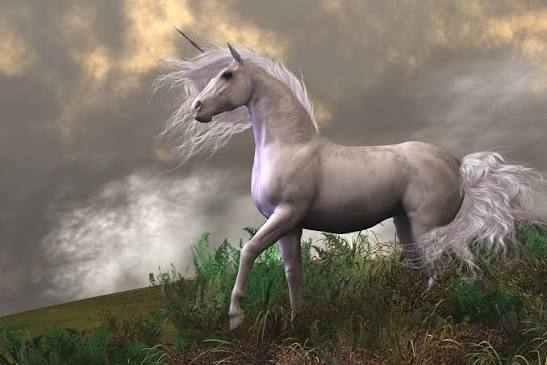

Кто такой единорог?
Единорог — это мифическое существо, которое обычно изображают как красивую белую лошадь с длинным спиральным рогом на лбу. На протяжении многих веков люди рассказывали легенды о единорогах. Их считали символом чистоты, добра, надежды и магии. Во многих сказках единорог появляется только перед честными и добрыми людьми.
Внешний вид
- 🦄 Белоснежная шерсть.
- ✨ Длинный спиральный рог.
- 👀 Голубые или серебристые глаза.
- 🌈 Длинная шелковистая грива.
- 🥇 Иногда золотые копыта.
Где живёт?
По легендам единороги живут в волшебных лесах, где растут огромные деревья, цветут необычные растения и текут чистые ручьи. Они избегают людей и появляются только тогда, когда чувствуют доброе сердце.
Волшебные способности
- ✨ Исцеляет болезни.
- 💧 Очищает воду.
- 🌿 Оживляет растения.
- 🛡️ Защищает лес.
- 🌈 Создаёт магический свет.
- ⚡ Очень быстро бегает.
Интересные факты
- 📖 Легендам о единорогах более 2000 лет.
- 🏰 Их изображали на гербах и старинных картинах.
- 🇬🇧 Единорог является национальным животным Шотландии.
- 💎 По легендам его рог обладает целебной силой.
- 🧚 Во многих сказках единороги дружат с феями.
Легенды
Согласно легендам, единорога невозможно поймать силой. Он доверяет только тем, кто добрый, честный и заботится о природе. Поэтому единорог стал символом чистоты, добра и справедливости.
Заключение
Хотя единороги являются вымышленными существами, они остаются одними из самых популярных персонажей сказок, легенд и фэнтези. Они напоминают людям о том, что доброта, честность и забота о других очень важны.